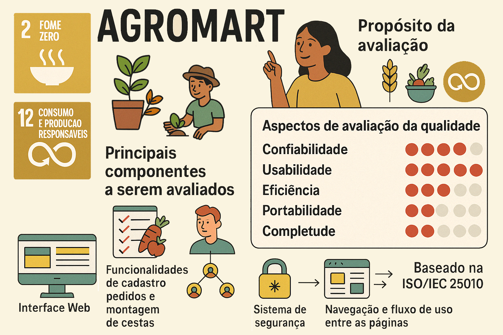

Escopo do Trabalho – Avaliação de Qualidade do AgroMart
üéØ Metas da Etapa
- Selecionar o software a ser avaliado (AgroMart)
- Descrever o propósito da avaliação
- Relacionar os objetivos com os ODS (Objetivos de Desenvolvimento Sustentável)
- Definir os requisitos e critérios de avaliação
üñ•Ô∏è Software Selecionado
- Nome: AgroMart (versão Web)
- Descrição: Plataforma de apoio à comercialização de cestas de produtos agroecológicos por meio de comunidades que sustentam a agricultura (CSA)
- Repositório: https://github.com/AgroMart
üéØ Prop√≥sito da Avalia√ß√£o
- Nome do Produto: AgroMart
- Versão: Considerada como 1.0 (em desenvolvimento)
Domínio de Aplicação: Agronegócio, com foco em agricultura familiar e comercialização digital de produtos agroecológicos. Pode incluir e-commerce, gestão de pedidos, controle de estoque e comunidades.
Objetivos da Avaliação:
- ✔️ Assegurar a qualidade do produto
- ✔️ Identificar pontos de melhoria
- ❌ Adequar o produto a normas de certificação
- ❌ Comparar com concorrentes
- ❌ Obter laudo técnico
- ❌ Classificação ou premiação
- ❌ Uso em licitações
Outro objetivo: Aprimorar usabilidade e confiabilidade, promovendo uma experiência fluida, intuitiva e estável para os usuários. A avaliação também dará suporte para melhorias futuras em eficiência e completude.
✅ Aspectos de Qualidade Avaliados
| Característica | Ênfase (1-5) | Justificativa |
|---|---|---|
| Usabilidade | 5 | Clareza de interface, navegabilidade, tempo de aprendizado e acessibilidade. |
| Confiabilidade | 4 | Consistência, integridade de dados e tolerância a falhas. |
| Eficiência | 2 | Tempo de resposta, leveza e consumo de recursos. |
| Portabilidade | 2 | Compatibilidade entre navegadores e dispositivos móveis. |
| Completude | 2 | Grau de implementação das funcionalidades previstas. |
üß© Descri√ß√£o Geral do Produto
Quantidade de Funções da Interface do Usuário: 11 - Cadastro e login de usuários - Visualização e busca de lojas (por nome ou região) - Visualização de produtos e preços - Contato com a loja - Realização de pedidos e histórico - Gerenciamento de planos, endereços e perfil
Tarefas Principais: 1. Cadastro de produtores e produtos 2. Montagem e gerenciamento de cestas 3. Processamento de pedidos e entregas 4. Administração das comunidades (CSA) 5. Comunicação entre usuários 6. Geração de relatórios
Funções Críticas para Avaliação: - Cadastro de produtores e produtos - Montagem de cestas - Comunicação e notificações - Gestão de comunidades (CSA) - Confiabilidade e rastreabilidade
Janelas de Interação: 1. Login e Cadastro 2. Dashboard 3. Cadastro de Produtos 4. Montagem de Cestas 5. Gestão de Pedidos 6. Administração das Comunidades (CSA)
üë§ Usuários e Ambiente
Usuários principais:
Pequenos agricultores, consumidores conscientes e coordenadores de CSA.
Ambiente de uso: - Regiões com acesso tecnológico limitado - Interface acessível para uso em celulares - Foco em transparência e confiança - Promove agricultura familiar e economia solidária
Conhecimento exigido: - Informática: Básico para navegação web e apps - Domínio da aplicação: Interface simples, voltada para o público geral
üîç Componentes Avaliados
- Interface Web (layout, fluxo, responsividade)
- Cadastro, pedidos e montagem de cestas
- Módulo de comunidades (CSA)
- Login e segurança básica
- Navegação geral e fluxo entre páginas
üìä Dados para Avalia√ß√£o
- Não há dados reais no repositório.
- Serão usados dados simulados (mock data) com base nas rotas e modelos definidos no sistema.
⚙️ Requisitos de Execução
Hardware: - Computador com navegador moderno (Chrome, Firefox, Edge) - Conexão com internet estável
Software: - Sistema operacional: Windows, Linux ou macOS - Navegador atualizado (Chrome recomendado) - Para testes locais: Node.js + npm ou yarn
üß≠ Categoria do Produto
- Domínio: Agronegócio / Agricultura Familiar
- Modelo de Negócio: Marketplace agroecológico
- Características Técnicas: Web responsiva com foco em acessibilidade
- Fonte de dados: Repositório público no GitHub com documentação parcial
üå± ODS Relacionados
- ODS 2: Acabar com a fome e promover agricultura sustentável
- ODS 12: Assegurar padrões sustentáveis de produção e consumo
üß™ Requisitos e Crit√©rios de Avalia√ß√£o
Modelo base: ISO/IEC 25010 adaptado ao contexto da aplicação AgroMart.
Critérios Adaptados:
- A avaliação será feita apenas na versão Web.
- Interações serão analisadas com base nas experiencias de usuários e protótipos disponíveis.
- Uso de massa de dados simulada para testes.
- Segurança avançada, acessibilidade plena e integração externa serão observadas apenas descritivamente.
✅ Imagem descritiva do projeto

Nota: Esse conteúdo foi baseado no esbo√ßo desenvolvida pelo Grupo sobre a plataforma AgroMart. üìÑ Acesse o documento
üìë Hist√≥rico de Versão
| Versão | Data | Descrição | Autor |
|---|---|---|---|
1.0 |
13/05/2025 | Criação da página do Projeto | Mayara A. Oliveira |
2.0 |
13/05/2025 | Criação do projeto | Felipe Pedroza, Fillipe Souto, Philipe Barbosa, Mayara Alves, Vinicius Mendes |